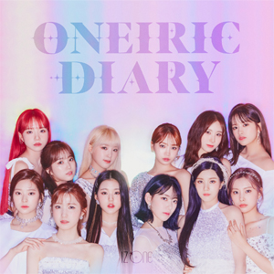

The Secret Story of The Swan

IZONE was a well-known girl group from South Korea and Japan that came together through the Mnet survival program Produce 48 in 2018. The group had 12 members, with 9 hailing from South Korea and 3 from Japan. They made their debut in October 2018 with their mini-album COLORIZ, featuring the popular track "La Vie en Rose." IZONE released several successful tracks, including "Fiesta," "Violeta," and "Panorama," before disbanding in April 2021 due to contract limitations.
- IZ*ONE was known for their elegant, synchronized performances and strong discography
- Iconic
- "The Secret Story of The Swan" represents their beautiful and dreamy concepts-uses the concept of swan to symbolize beauty and transformation. This theme also tells us to let go of self-doubt and fully accept who you really are.